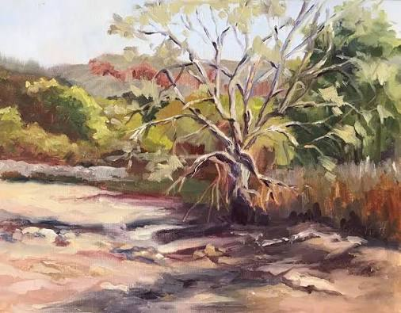

Poems
Buried and Forgotten Gods

There is a river in my hometown that they buried before I was born. Before my parents were born. It is not unlikely to think that there had been a boy perhaps a friend to my young grandfather perhaps even my grandfather that would go down to its bank to catch crayfish and frogs before dinner beckoned him home. Today, the bridges to cross its zigzagging path remain in the grassy boulevard of my childhood neighborhood. Cars ascend up and over antiquated concrete ghosts, connecting two sides divided by nothing but time. I do not live there anymore. I made my way west to a city where the river still runs through. But even here the dams and the endless yearn for control have made the salmon no more. Have made the river a tool. Have made a once Divine power a novelty. Rush hour hassle of commute; we navigate bridges backed up with traffic all of us so focused on where we are going that we have forgotten to look down at the God we commute above. How soon does what we love become what we forget? At what point do we bury our Gods?
Mike R. Christie lives with his wife live in Spokane, WA where he facilitates an eco-spiritual community called All These Branches and manages a supportive housing program for the state of Washington. His work has been published in multiple journals and featured on the Spokane Public Radio program, Poetry Moment. He blogs regularly on Substack under the moniker Hark the Holobiont.